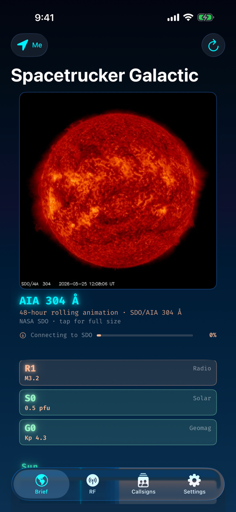
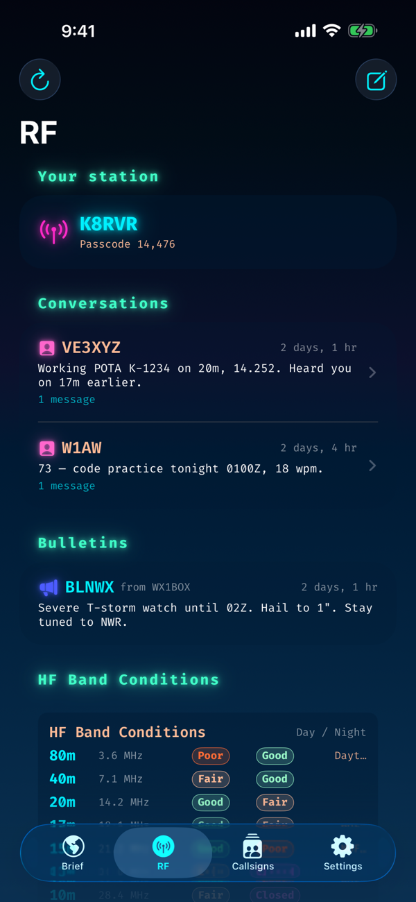
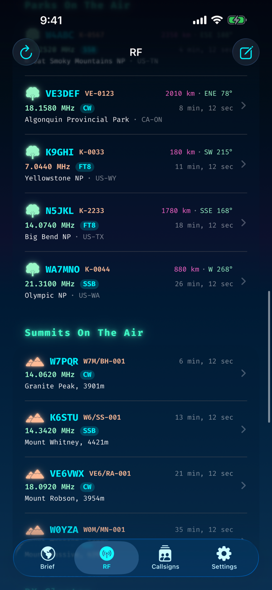
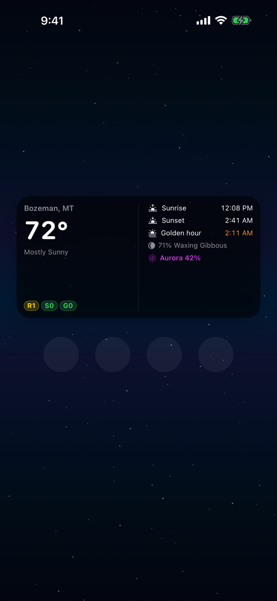

Galactic
A daily almanac for amateur radio operators, space-weather watchers, and anyone who keeps an antenna outside. One brief — propagation, parks, summits, DX, APRS, sun, moon, marine, weather — tuned to where you are.

Built for the operator who actually goes outside
Field Day · Sat 1400 local
You're chasing the band opening
Kp 4, A 22, SFI 168 — 20m is alive and 15m just popped open after the morning grayline. The RF tab tells you in three rows what would otherwise take three browser tabs.
POTA Activation · K-0033
You drove three hours to a park
One tap pulls the POTA spot list filtered to recent activity near you, sorted by distance from your QTH with a great-circle bearing. Tap any spot for the detail page — frequency, mode, comments, map pin, and how far you'd have to point a beam.
Marina · Friday at dawn
You want a sailing forecast in one place
Marine zone GMZ033, swell, wind, and weather periods parsed from the NWS text bulletin — alongside golden-hour times so the photo on the way out of the slip lands right.
Mobile · No cell bars
You're parked in a canyon
Sun, moon, planet, and magnetic-declination math runs on-device — the brief surfaces a quiet offline banner where network-sourced sections would normally be. Refresh when you climb out.
What's inside
HF propagation summary
Live planetary Kp, A index, and 10.7 cm SFI from NOAA SWPC, plus a plain-English read on band conditions and noise floor.
Aurora-likelihood flag
OVATION-sampled probability at your latitude with the global oval peak alongside. Heads-up when HF's about to get interesting.
POTA & SOTA
Live spot lists sorted by distance, tappable detail pages with bearing and a map pin.
DX cluster
Recent DX spots so you can see what's audible right now.
Magnetic declination
Computed against the World Magnetic Model — for beam headings and portable directional antennas.
APRS callsign tracking
Save callsigns, pull last-known positions from aprs.fi (your key), with APRS-symbol icons and path-derived DX stats.
Sun, twilight, golden hour
24-hour color strip plus civil, nautical, and astronomical transitions. Notifications scheduled 14 days ahead.
Moon — phase + surface
Illumination, named phase, and procedural surface features (Imbrium, Tranquillitatis, Tycho) faded by lit fraction.
Planets
Ten bodies (Sun, Moon, Mercury → Pluto) in zodiac signs at their current degree — Meeus's formulas, on-device.
Marine forecasts
NWS coastal-zone text bulletins (GMZ, AMZ, PZZ, AN, …) parsed as readable periods.
Earth weather
Six-period NWS forecast straight from the gridpoints API for your coordinates.
Upcoming launches
Next five orbital launches from The Space Devs — provider, pad, status.
The brief, three ways



What Galactic is — and isn't
What it is
- A personal almanac for ops in the field
- A receive-only APRS client (aprs.fi reads)
- A quick-look propagation indicator
- An on-device sun / moon / planet engine
- A polite client of NWS, SWPC, POTA, SOTA, …
What it isn't
- An APRS transmitter — use a real TNC
- A VOACAP-grade propagation model
- A backend, an account, an inbox
- Aviation or commercial maritime brief-grade
- Tracking you, anywhere, ever
On-device, by design
Galactic was written for a 2025 Coachmen Remote pulled across the Southwest by a 4Runner. Cell coverage at a POTA park or a campground picnic table is what it is. There's no Galactic backend because we don't want one — every byte of data Galactic shows came directly from a public-API request you made.
→ GET tgftp.nws.noaa.gov /coastal/{ZONE} // Marine bulletin
→ GET services.swpc.noaa.gov /products/… // Kp + SFI + aurora
→ GET ll.thespacedevs.com /launch/upcoming/ // Launches
→ GET api.pota.app /spot/ // POTA spots
→ GET api2.sota.org.uk /api/spots/… // SOTA spots
→ GET www.dxsummit.fi /api/v1/spots // DX cluster
→ GET api.aprs.fi ?call={CALL}&apikey=… // APRS lookups
// no analytics. no crash reporters. no third-party SDKs. no account server.
What stays on your phone
| Data | Where | Purpose |
|---|---|---|
| Your callsign + aprs.fi key | UserDefaults (this device) | APRS lookups |
| Saved friends' callsigns | UserDefaults (this device) | Quick brief at their last fix |
| Default marine zone | UserDefaults (this device) | One-tap marine forecast |
| Notification fire-times | iOS notification center | Golden-hour & astro-dusk alerts |
| Cached brief snapshot | App container (this device) | Offline fallback |
Anything that needs to leave the device leaves only when you tap refresh — and only to the public service that produces that particular piece of data.
◇ ✦ ◇Pricing
Free at launch. No in-app purchases, no subscriptions, no "upgrade to Pro." If we ever charge, the existing build will keep working.
System requirements
- iPhone running iOS 17 or later
- Apple Watch on watchOS 10+ (optional — for the watch app + complications)
- An aprs.fi read API key (free) if you want callsign position lookups — the rest of the app works without one
Galactic is not affiliated with the National Weather Service, NOAA, aprs.fi, POTA, SOTA, The Space Devs, the DX cluster network, or any state EVV system. It consumes their public services as a polite client and credits each on the Brief.
73 — de SpaceTrucker